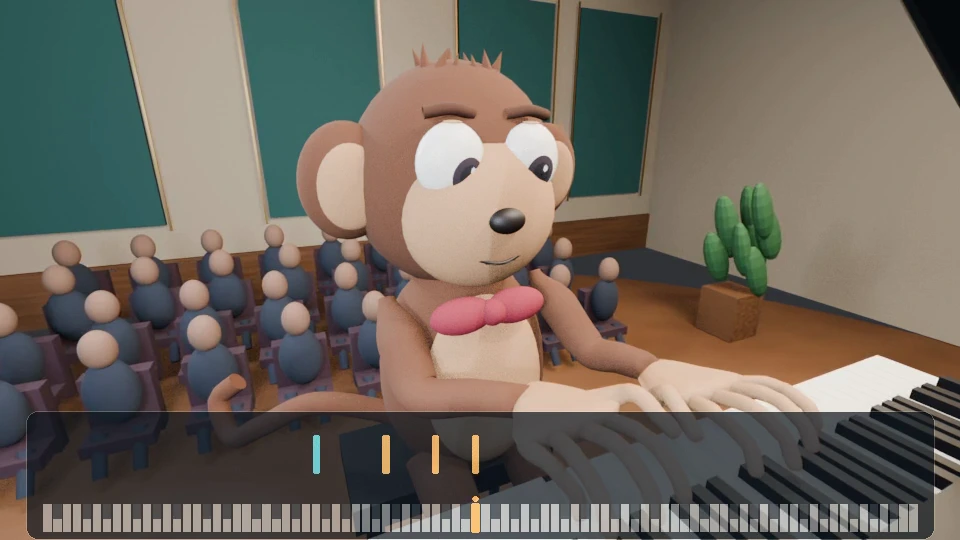
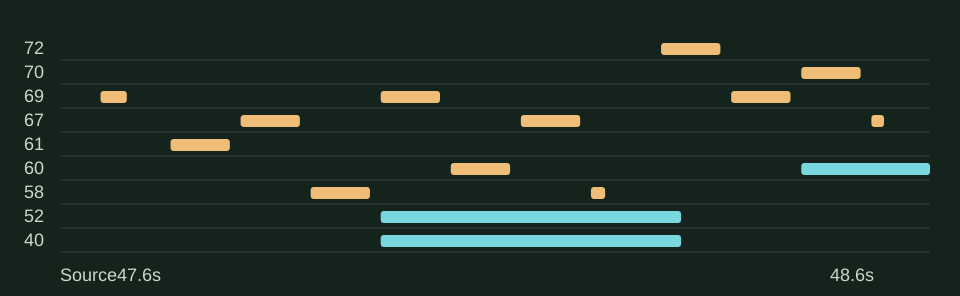
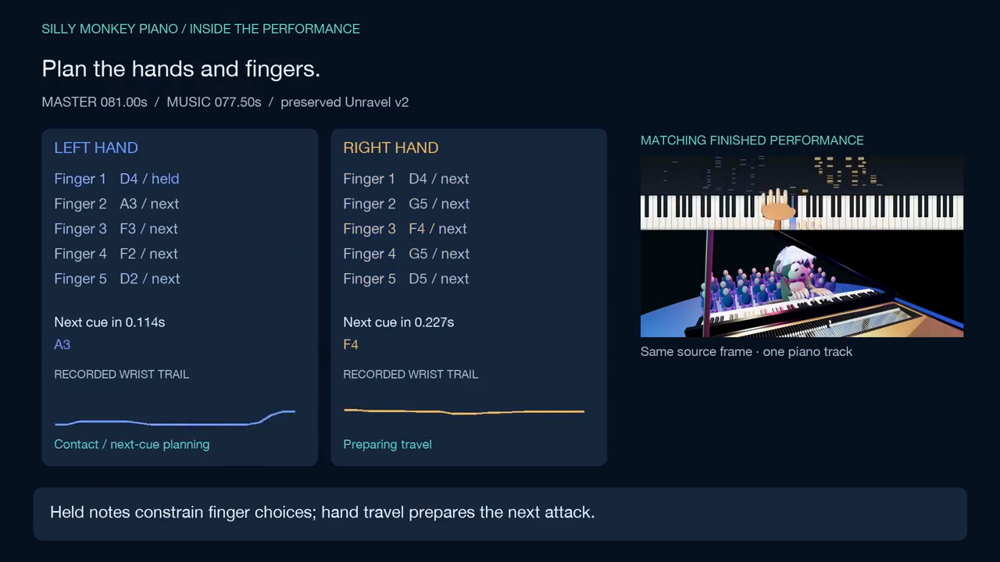
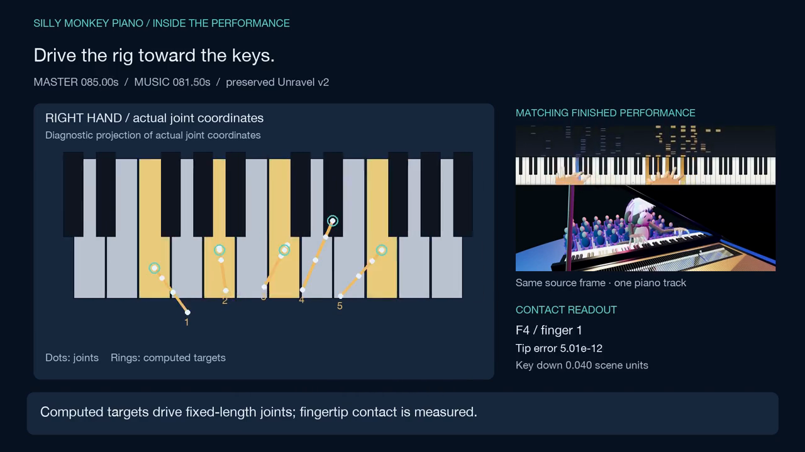
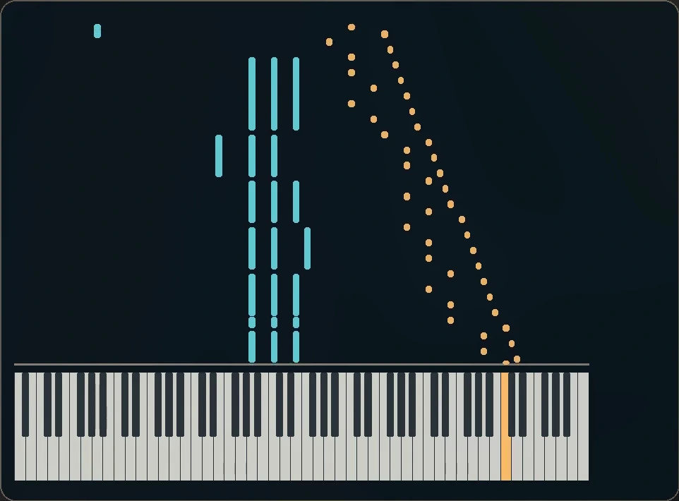
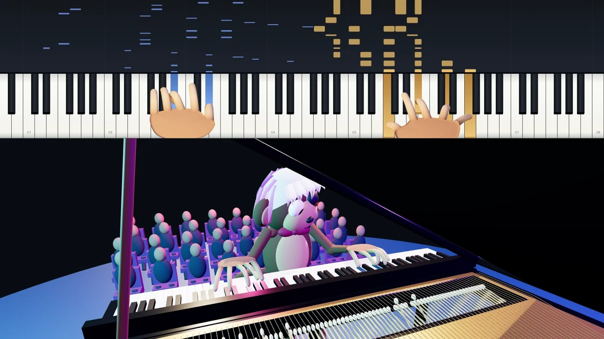
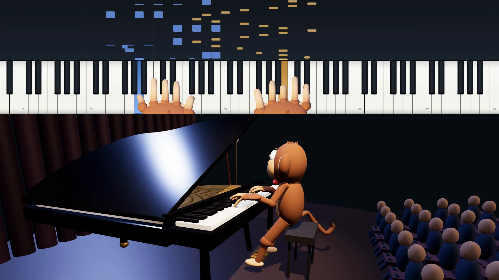

A piano animation project
Piano
Performance
Simulation.
Note timing connects piano sound, fingers, hands and moving keys.
Watch the featured performance with sound
Muted preview · tap to hear the piano.
Project demonstration: Winter Wind · Chopin, Op. 25 No. 11
Explore the implementation
How the performance is built.
Explore the music, motion and rendering in one place. Current performance views and earlier mechanics diagnostics are labeled separately.
Which note,
and when?
The score supplies pitches and musical structure. Timing, dynamics and pedal turn them into the piano performance.
This chart shows one second of finger contact. A longer bar means a longer hold on the key, not necessarily a longer audible note.
Actual events · source 0:47.6–0:48.6
Map a note
to a finger.
Hand assignments and a fingering plan connect pitches to physical contact. Held notes limit which fingers are free, while the wrist prepares the next reach.
The diagnostic view shows finger assignments alongside the corresponding earlier performance frame.

Rendering
Rendering software turns the animated character, instrument, stage and cameras into video frames. The rig connects joint positions with fingertip targets and moving keys.
This archived diagnostic projects the right-hand joints beside the finished scene. Its readout belongs to the specific source frame shown.

See the notes
arrive.
The bars enter gradually and reach the keyboard when a note is played. Their positions stay tied to the same pitches as the camera changes.
The portrait version uses larger, naturally spaced white and black keys. Hand colors come from the performing-hand assignments.

Watch the
mechanics change.
Timing, finger assignments and rig targets move through the passage. Comparing the diagnostics with the rendered frame helps explain how the motion is built.
Press Play for a silent excerpt from the completed project walkthrough. It documents an earlier implementation.
Winter Wind · one performance clock
Inside the performance.
Timing, pedal, finger assignments and planned key contacts follow the video at the top as you scroll.
Cyan: left hand · gold: right hand. Finger circles show assigned holds and next notes. One shared keyboard aligns planned holds, all ten evaluated fingertips and separate held-contact targets. Positions interpolate between samples; contact markers show sampled geometric pad contact (not pressure).
Examples from the project
Earlier versions.

Unravel
An earlier character design and matched hand revisions. Still images are available here; no Unravel audio is included.

Pas de deux
Tchaikovsky’s Adagio shows a full-performance and portrait release from an earlier stage of the project.
Watch an earlier mechanics excerpt in Earlier versions.
Winter Wind · Chopin · 3:25
Different Viewing Formats
View the same complete performance as the pianist, pianist with the performance visualizer, or portrait. Each format uses the published softer-phrase soundtrack.
Cyan follows the left hand; amber follows the right.
Featured performance release links: Winter Wind
YouTube Instagram